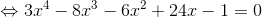
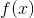
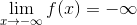
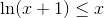
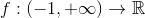
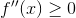

Studiul funcțiilor cu ajutorul derivatelor
Șirul lui Rolle
Se dă un interval de numere reale  și funcția .
și funcția .
Dacă funcția  este continuă, atunci se pot găsi soluțiile reale pe intervalul
este continuă, atunci se pot găsi soluțiile reale pe intervalul  ale ecuației . Ne punem problema separării acestor soluții.
ale ecuației . Ne punem problema separării acestor soluții.
Atunci când vrem să separăm soluțiile ecuației , trebuie să precizăm numărul de soluții reale ale ecuației și intervalele în care sunt situate aceste soluții.
Astfel, s-a determinat o metodă pentru separarea soluțiilor ecuației , numită șirul lui Rolle.
Etapele șirului lui Rolle:
- Fixăm intervalul de studiu al ecuației și definim funcția , derivabilă pe intervalul definit.
- Calculăm și determinăm soluțiile ecuației din intervalul și anume , cu proprietatea că .
- Formăm șirul , unde
 și
și  sunt valorile funcției calculate în capetele intervalului sau limitele funcției la capetele intervalului.
sunt valorile funcției calculate în capetele intervalului sau limitele funcției la capetele intervalului. - Organizăm rezultatele într-un tabel cu liniile și o linie în care trecem semnele valorilor .
Acest șir al semnelor valorilor funcției este de fapt ceea ce numim noi șirul lui Rolle.
Cum interpretăm tabelul?
- Dacă șirul lui Rolle conține două semne alăturate identice, atunci în intervalul corespunzător nu există nici o soluție reală a ecuației .
- Dacă în șirul lui Rolle apar două semne consecutive diferite, ecuația are o singură soluție reală în intervalul studiat.
- Dacă în șirul lui Rolle apare
 , de exemplu , atunci este rădăcină multiplă a ecuației .
, de exemplu , atunci este rădăcină multiplă a ecuației . - În funcție de numărul schimbărilor de semn și al zerourilor din șirul lui Rolle, putem determina numărul soluțiilor reale ale ecuației , acestea fiind egale.
Exemplu:
Să se contruiască șirul lui Rolle pentru funcția  , .
, .
Rezolvare:
Atașăm funcției ecuația .
.
Funcția este derivabilă pe  , fiind o compunere de funcții derivabile pe .
, fiind o compunere de funcții derivabile pe .
Derivata funcției este:
.
Aflăm rădăcinile ecuației .
Deci, am găsit soluțiile: .
Capetele intervalului de definiției al funcției sunt  și
și  .
.
Avem că:
.
.
.
.
.
Facem tabelul corespunzător șirului lui Rolle.
 |  |
 | |
|  |  |
| Șirul lui Rolle |  |


Se poate observa că în șirul lui Rolle sunt doar două schimbări de semn. Așadar, ecuația are două soluții reale: o soluție în intervalul și o soluție în .
Rolul derivatei întâi
Prima derivată (derivata de ordinul întâi) este utilă în determinarea punctelor de extrem și în studiul monotoniei unei funcții date.
Propoziția FD21: Monotonia unei funcții în funcție de prima derivată
Fie , interval.
- Dacă 0, x\in I">, atunci este strict crescătoare pe .
- Dacă , atunci este strict descrescătoare pe .
Propoziția FD22: Determinarea punctelor de extrem
Fie ,  .
.
- Punctul
 este punct de maxim local pentru funcția dacă există o vecinătate
este punct de maxim local pentru funcția dacă există o vecinătate  , astfel încât funcția este strict crescătoare pentru
, astfel încât funcția este strict crescătoare pentru  , și este strict descrescătoare pentru , .
, și este strict descrescătoare pentru , . - Punctul este punct de minim local pentru funcția dacă există o vecinătate , astfel încât funcția este strict crescătoare pentru , și este strict descrescătoare pentru , .
Definițiile pentru noțiunile de punct de maxim local și punct de minim local, dar și pentru punct de maxim global și punct de minim global s-au dat în introducerea capitolului anteriori, Proprietăți ale funcțiilor derivabile.
Practic, pentru a studia monotonia unei funcții și a-i determina punctele de extrem, trebuie să parcurgem următoarele etape:
- Determinăm domeniul maxim de definiție.
- Calculăm
 și determinăm domeniul de definiție al funcției derivată.
și determinăm domeniul de definiție al funcției derivată. - Aflăm punctele critice, adică determinăm soluțiile ecuației .
- Studiem semnul derivatei.
- Întocmim tabelul de variație.
- Citim rezultatele din tabel.
Tabelul de variație este tabelul în care introducem datele obținute în urma parcurgerii etapelor descrise mai sus. Pe prima linie a tabelului se trec soluțiile ecuației , dar și capetele domeniului de definiție al funcției. Dacă funcția este definită pe dreapta reală  , în tabel vom trece și la marginile primei linii. Pe a doua linie vom scrie sub fiecare rădăcină de pe prima linie și între -uri vom trece semnele funcției derivată pe intervalele respective. Pe ultima linie vom calcula valorile funcției în punctele determinate (soluțiile ecuației ) și valorile funcției în capetele intervalului sau limitele în capetele intervalului. Între valorile sau limitele funcției calculate anterior vom trece săgeți, astfel:
, în tabel vom trece și la marginile primei linii. Pe a doua linie vom scrie sub fiecare rădăcină de pe prima linie și între -uri vom trece semnele funcției derivată pe intervalele respective. Pe ultima linie vom calcula valorile funcției în punctele determinate (soluțiile ecuației ) și valorile funcției în capetele intervalului sau limitele în capetele intervalului. Între valorile sau limitele funcției calculate anterior vom trece săgeți, astfel:
- dacă pe linia de mai sus (linia derivatei) avem semnnul pe un interval, vom trece semnul (înseamnă că funcția ”crește” pe acel interval);
- dacă pe linia corespunzătoare derivatei avem semnnul vom completa tabelul cu săgeata (atunci funcția ”descrește”).
Pentru a te familiariza cu acest algoritm, urmărește cu atenție și încearcă să rezolvi următoarele exemple:
Exemplu:
Fie funcția , .
Atunci derivata funcției este:
.
Am putut calcula derivata funcției date, deoarece acesta este derivabilă, fiind compusa unor funcții elementare derivabile pe mulțimea numerelor reale.
Domeniul de definiție al funcției derivată este tot .
Rezolvăm ecuația .
Calculăm  și .
și .
.
.
Punctele de extrem sunt și .
Deoarece f(x_2)=f(1) \end{align*}">, vom avea că este punct de maxim local pentru funcția dată cu valoare maximă  , iar punctul este punct de minim local cu valoarea minimă
, iar punctul este punct de minim local cu valoarea minimă  .
.
În plus, , iar .
Întocmim tabelul de variație al acestei funcții.

Atât din tabel, cât și pe baza Propoziției FD21: (Monotonia unei funcții în funcție de prima derivată), avem că:
- e crescătoare pe intervalele și ;
- e descrescătoare pe intervalul ![\left [ -1,1 \right ]](../media/webbooks/397/2639/images/equations/ola2-ykit5c2cstdhxjuda==.gif) .
.
Aplicație:
Demonstrarea unor inegalități pe baza studiului funcțiilor cu ajutorul derivatelor
Să se arate că , pentru orice  .
.
Rezolvare:
.
Fie funcția , .
Avem de demonstrat că .
Funcția dată este derivabilă, deoarece este compusa unor funcții elementare derivabile.
Deci putem calcula .
.
Domeniul funcției derivată este tot .
Atunci:
Calculăm .
.
Întocmim tabelul de variație.

Funcția este crescătoare pe intervalul și e descrescătoare pe intervalul .
Înseamnă că punctul  este punct de maxim global.
este punct de maxim global.
Deci , ceea ce este echivalent cu:
.
În concluzie, , pentru orice .
Rolul derivatei a doua
Derivata a doua a unei funcții (mai este numită derivata derivatei unei funcții) se utilizează la determinarea puntelor de inflexiune și la studiul convexității și concavității unei funcții.
Propoziția FD23: Convexitate. Concavitate. Punct de inflexiune
Fie , interval. Atunci:
- Funcția este convexă pe intervalul dacă și numai dacă , pentru orice .
- Funcția este concavă pe intervalul dacă și numai dacă , pentru orice .
- Un punct este punct de inflexiune pentru funcția dacă există o vecinătate , astfel încât:
.
Observație:
În punctele de inflexiune ale unui interval, derivata a doua a unei funcții se anulează și schimbă semnul.
În punctele de extrem, derivata I este cea care se anulează și schimbă semnul.
Schimbarea semnului presupune trecerea de la la sau de la la .
Exemplu:
Să se stabilească intervalele de convexitate și concavitate ale funcției , .
Rezolvare:
Funcția dată este compusa unor funcții elementare derivabile, deci este funcție derivabilă.
Calculăm prima derivată a funcției .
.
Continuăm procedeul de derivare și calculăm , pentru  .
.
.
Rezolvăm în mulțimea numerelor reale ecuația .
Calculăm .
.
Întocmim tabelul de variație.

Din tabel și conform Propoziției FD23: Convexitate. Concavitate. Punct de inflexiune avem că:
- e convexă pe intervalul ;
- e concavă pe intervalul .
În plus, punctul este punct de inflexiune.